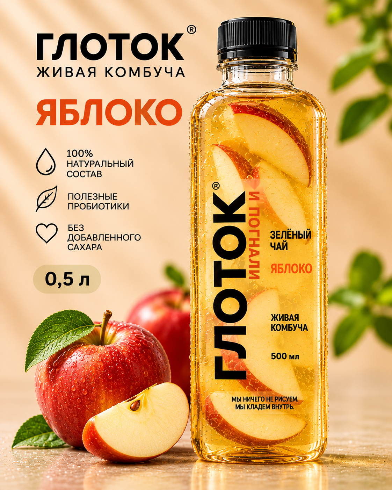
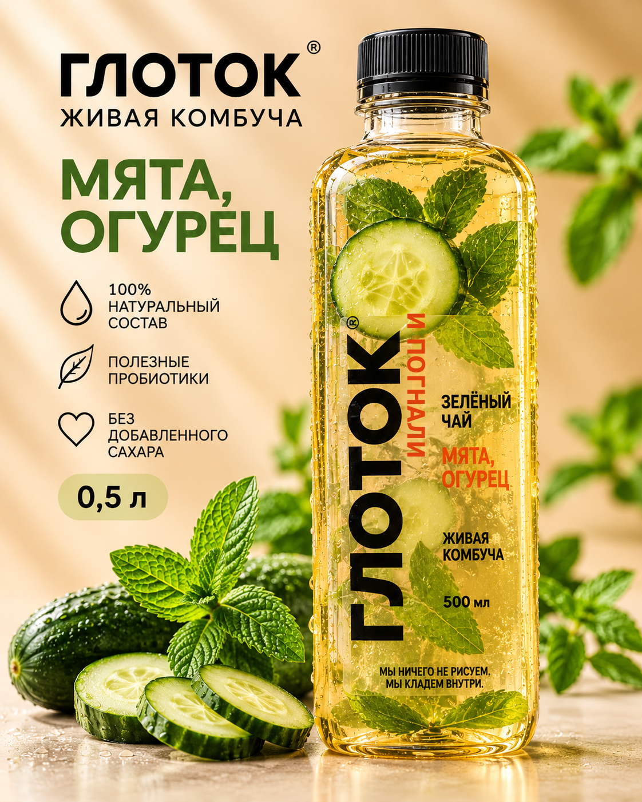
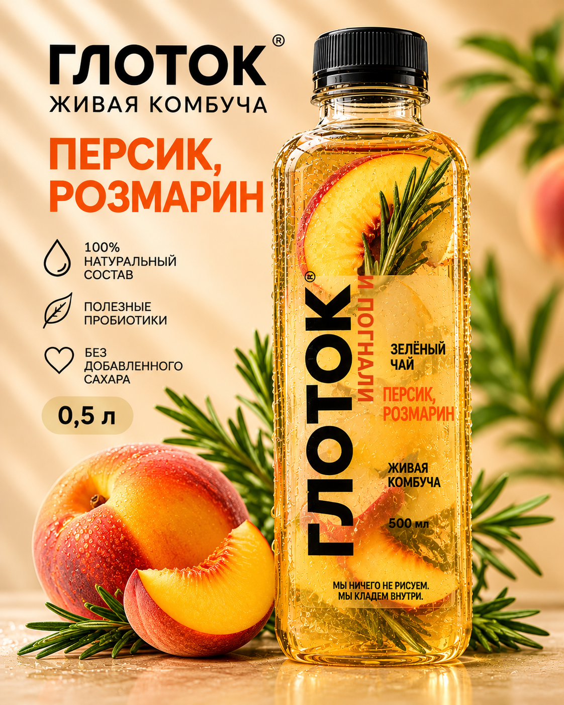
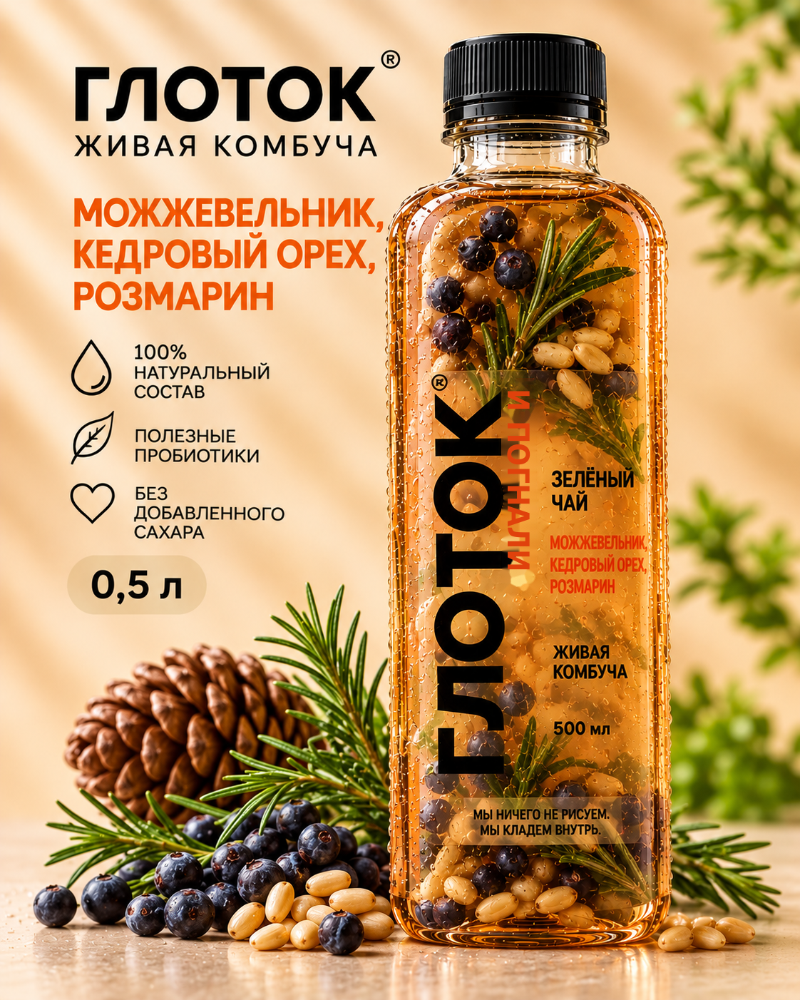
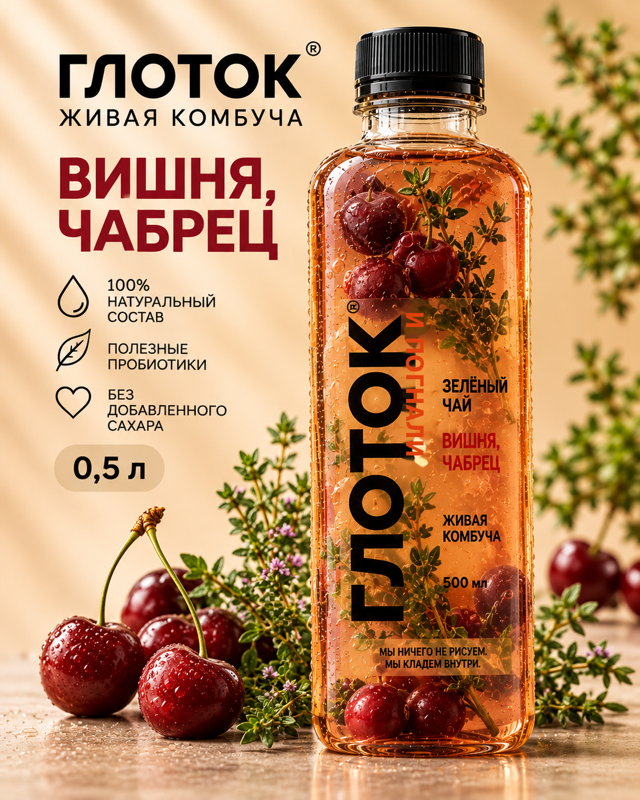
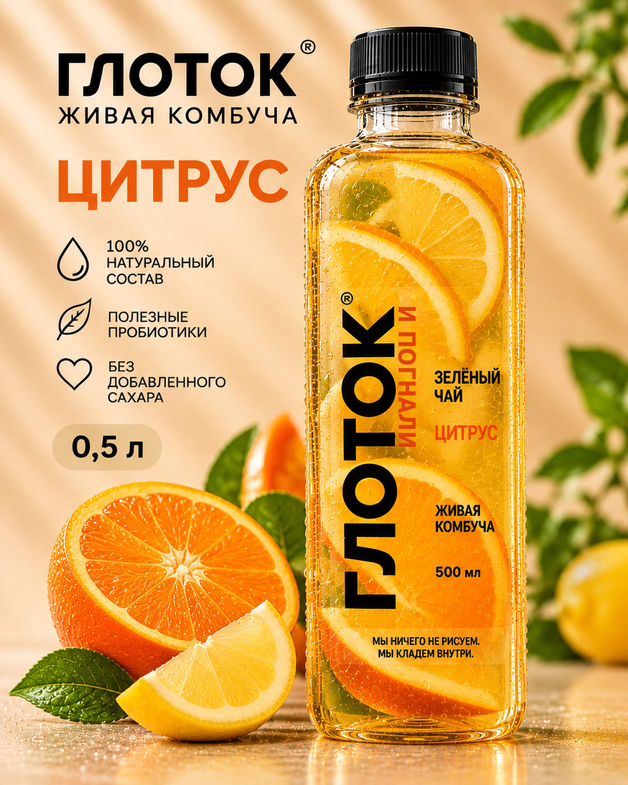
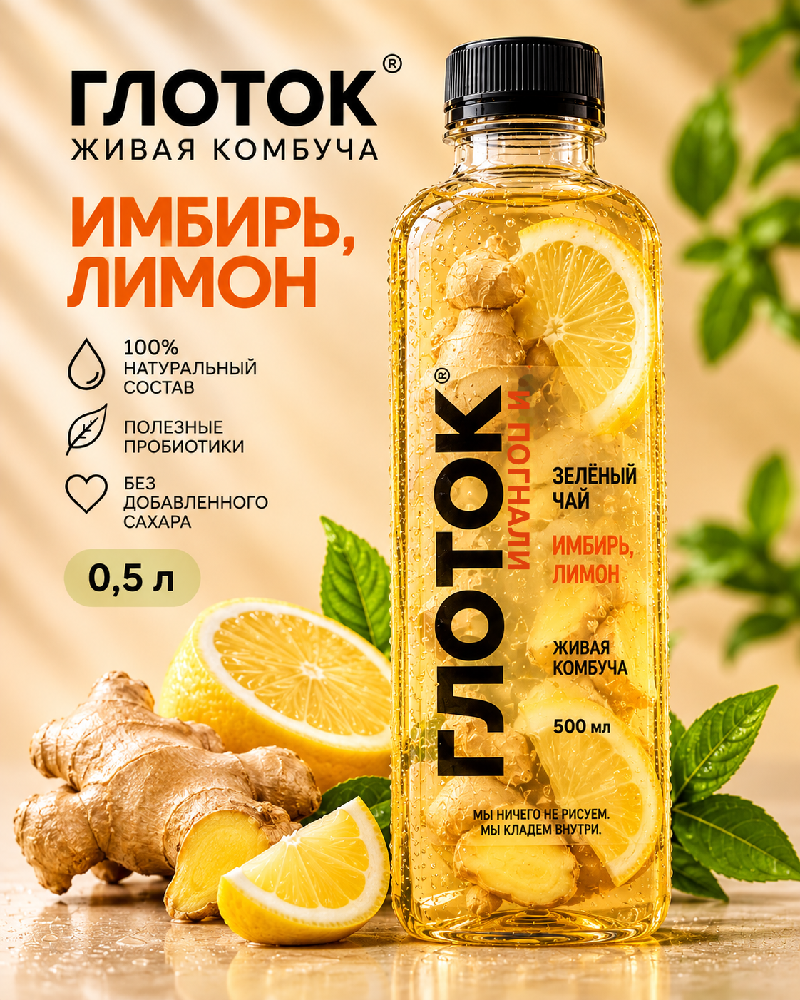

Яблоко
Классический освежающий вкус на основе зелёного чая и сочного яблока.
100% состав
Пробиотики
Без сахара
0,5 л
Живая комбуча — вкус и свежесть в каждом глотке
Смотреть вкусы
Классический освежающий вкус на основе зелёного чая и сочного яблока.

Деликатный летний микс: прохлада огурца и свежесть мяты.

Тёплый южный вкус: сладость персика и пряная нота розмарина.

Лесной, глубокий вкус с хвойными и ореховыми оттенками.

Насыщенный ягодный вкус с травяной глубиной чабреца.

Яркий и бодрящий микс апельсина, лайма и цедры.

Жгучая пряность имбиря в обрамлении цитрусовой свежести.
Мы ничего не рисуем. Мы кладём внутрь.
Каждая бутылка — результат бережной ферментации на чайной культуре.
100% натуральный состав, полезные пробиотики, без добавленного сахара.